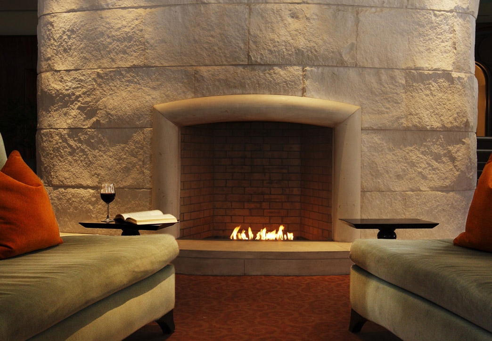

Video-Requirements: 720x480, 30fps
720x480 480x320 360x240 30fps 24fps 15fps 10fps
Value: 0
Measurement of fps(when activated frame and fps counter stop)
Clip White
Value: 1
Clip Black
Weight
Balance